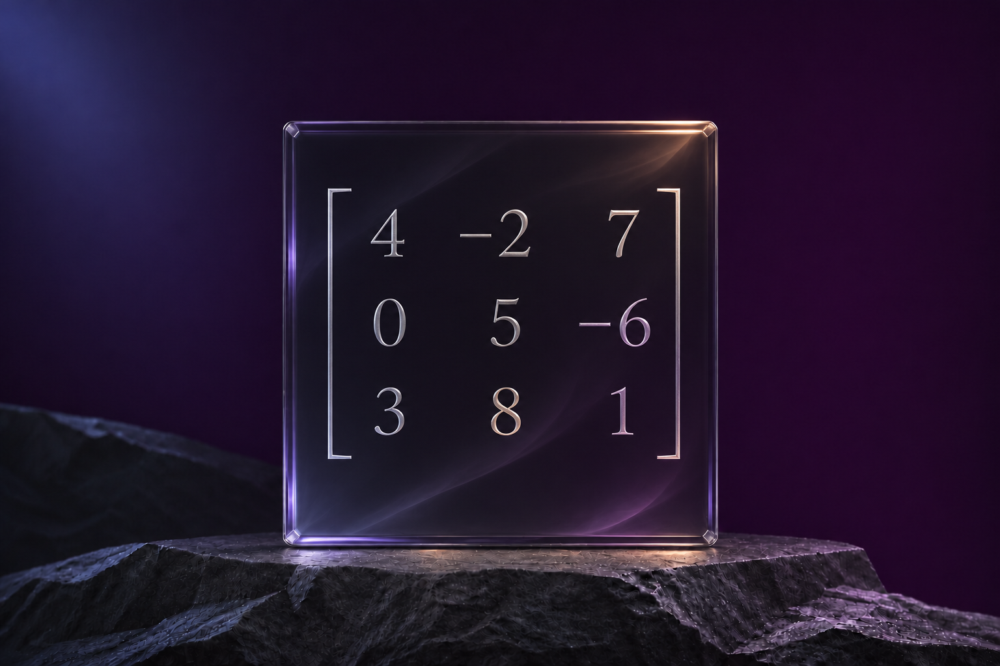

База данных парфюмерии
Хранение товаров и категорий, связи между таблицами и выборка данных.
Учебное портфолио
Учебные работы по базам данных и программированию.
Хранение товаров и категорий, связи между таблицами и выборка данных.
Поиск минимальных и максимальных элементов и вычисление средних значений.
